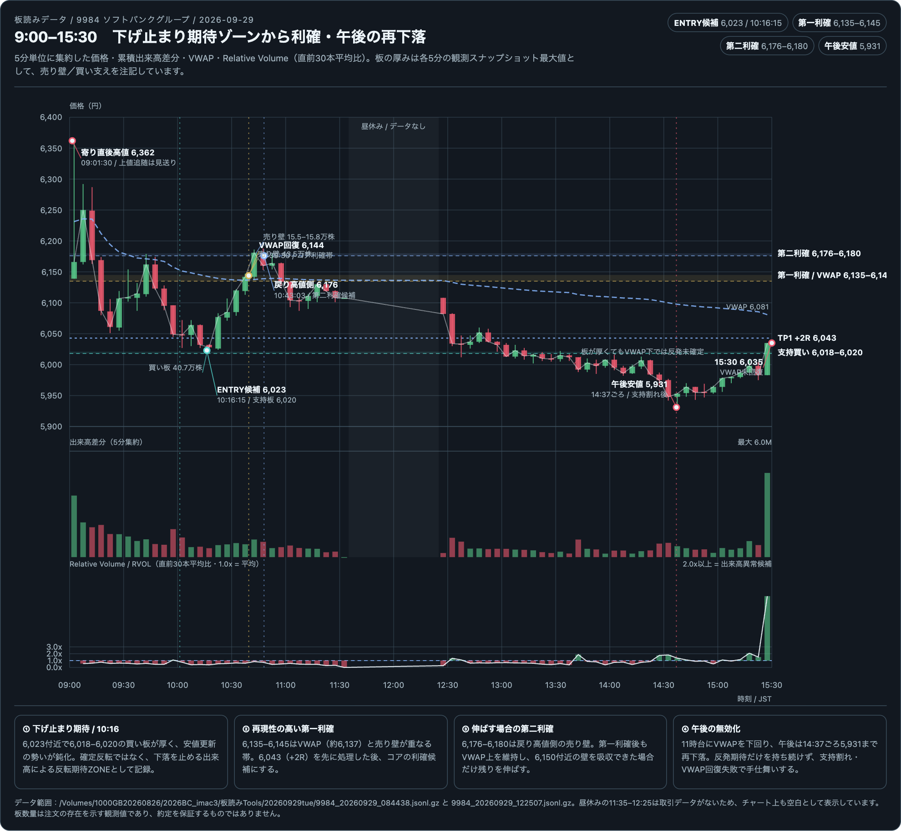
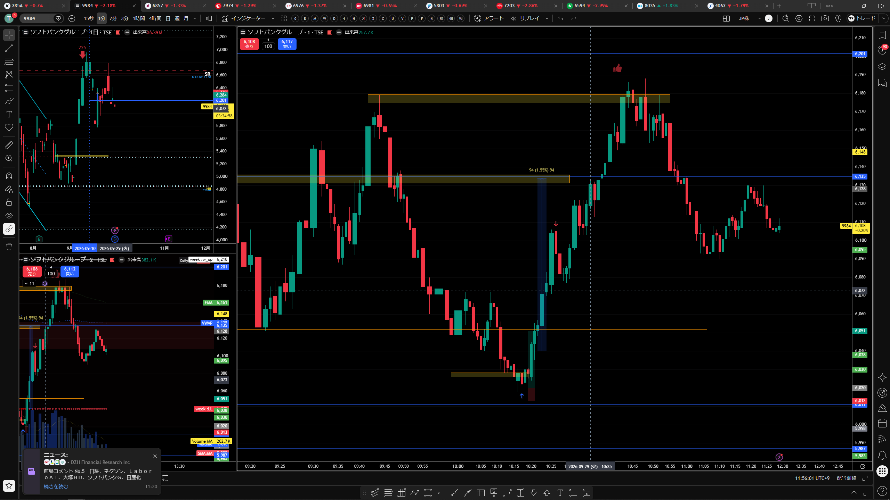
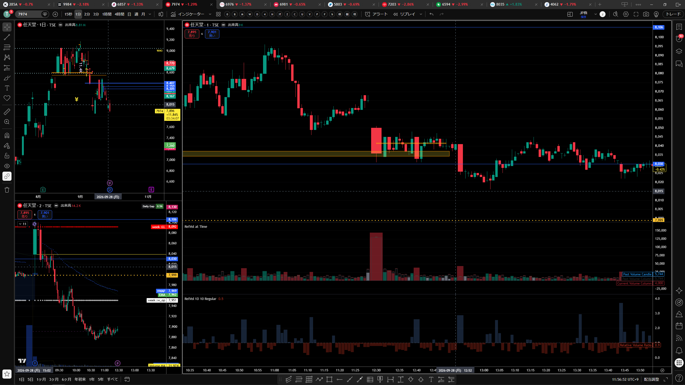

2026年9月29日（火）本番トレード日誌｜9984・285A実績と板読み復習
本番粗損益：+4,900円（CSVの約定単価による手数料・税引前概算）。
実績と検証：実約定とチャート上のENTRY候補・理想利確を分離して記録する。画像上の8035注文通知はCSVにないため、損益には含めない。
中心テーマ：下落停止型・出来高反転の反転期待値ZONEと、再現性のある利確位置。
0. 本日の結論
9984は寄り直後に6,362円まで上昇した後、下落レッグを形成した。10:16:15頃、6,023円付近で6,018–6,020円の買い板が観測され、6,018円まで下げたものの下落が連続しなかった。この場所を、反転確定ではなく、下落停止型・出来高反転の反転期待値ZONEとして記録する。
本番CSVでは、9984を10:17に6,025円で買い、10:21に6,037円で売却して+1,200円。午後は9984のSHORT 2枚で+200円、285AのSHORT 1枚で+3,500円となり、CSV確認分の粗損益は合計+4,900円だった。
その後は6,043円、6,135–6,145円、6,176–6,180円へ順に到達した。最も再現性が高い利確位置は、VWAPと売り壁が重なる6,135–6,145円。6,176–6,180円は、強さが続く場合だけ残りを伸ばす第二目標とする。
本日の実約定サマリー
| 銘柄 | 方向 | ENTRY約定 | EXIT約定 | 数量 | 粗損益（概算） |
|---|---|---|---|---|---|
| 9984 ソフトバンク | LONG | 10:17、6,025円 | 10:21、6,037円 | 100 | +1,200円 |
| 9984 ソフトバンク | SHORT | 12:31 6,038円 12:32 6,048円 | 12:33 6,041円 6,043円 | 各100 | +200円 |
| 285A キオクシア | SHORT | 12:33、17,705円 | 12:35、17,670円 | 100 | +3,500円 |
| 合計 | +4,900円 | ||||
9984の朝の実約定は、板読み上のENTRY候補6,023円に近い6,025円で成立した。一方、チャート上の第一利確候補6,043円まで待たず、6,037円で手仕舞っている。
1. 9984の9:00–15:30値動き
| 時刻・水準 | 観察内容 | 日誌上の扱い |
|---|---|---|
| 09:00 | 寄り付き6,139円。 | 初期値 |
| 09:01:30 | 寄り直後高値6,362円。 | 高値追随は見送り、下落後を待つ |
| 10:16:15 | 6,023円付近。直下6,020円に買い板。 | ENTRY候補。反転確定ではない |
| 10:16:23 | 6,018円まで下落。 | 支持帯の最終確認・無効化候補 |
| 10:17 | 松井証券CSVで9984を6,025円で100株買い約定。 | チャート候補6,023円に近い本番ENTRY |
| 10:20頃 | 6,043円へ到達。 | 先行利確、約+2R目安 |
| 10:21 | 松井証券CSVで9984を6,037円で100株売り約定。 | 朝のLONGを+1,200円で手仕舞い |
| 10:37–10:39 | 6,135–6,145円へ到達。VWAP約6,137円を回復。 | 第一利確のコアZONE |
| 10:40頃 | 6,150円付近に約43.5万株の売り壁。 | 壁の吸収を確認する場面 |
| 10:43–10:48 | 6,176円、最終的に6,188円付近まで上昇。 | 第二利確・伸ばす分の候補 |
| 11:00以降 | VWAP下へ戻る。 | 午前の反転継続を停止 |
| 14:37頃 | 午後安値5,931円。 | 反転仮説の一日継続を否定 |
| 15:30頃 | 6,035円。VWAP約6,081円を回復できず。 | 終盤も上位足下方向を維持 |
午後の実約定
- 12:31に9984を6,038円で100株売り、12:32に6,048円で100株売り。
- 12:33に6,041円と6,043円で各100株買い戻し。2枚合計の粗損益は+200円。
- 285Aは12:33に17,705円で100株売り、12:35に17,670円で買い戻し。粗損益は+3,500円。
- 画像には8035の11,420円・100株の成行買い通知が表示されているが、今回のCSVに8035の行はないため、実績・損益には含めず未照合として扱う。
2. 板読みの根拠
10:16の反転期待値ZONE
- ENTRY候補：6,023円。
- 直下6,020円付近に約40.7万株の買い板。
- 6,018円まで下げたが、安値更新が連続しなかった。
- その後6,043円まで戻り、下落の結果が反転した。
「買い板が厚いから反発」ではなく、売りの努力に対する価格結果の小ささ、後続足の縮小、支持帯下に置ける無効化ラインを組み合わせて判定する。
上昇後の売り壁
- 6,150円付近：約43.5万株。
- 6,180円付近：約15.5–15.8万株。
- 6,135–6,145円はVWAPと売り壁手前が重なる。
- 6,176–6,180円は戻り高値側の第二目標。
壁の吸収が確認できない場合、全量を残して上値を追わない。
225％R下・60分足下降トレンド中のLONG
225の％Rは下側、60分足も下降目線であり、9984のLONGは順張りではなくカウンタートレンドLONGである。6,023円は上昇トレンド転換の確定ではなく、支持帯下を無効化ラインにした短期反発の仮説とする。
3. 再現性のある利確方法
| 段階 | 価格 | 根拠 | 扱い |
|---|---|---|---|
| 先行利確 | 6,043円 | 6,023円から約+20円。初期リスク10円なら+2R。 | 一部を先に確定 |
| コア利確 | 6,135–6,145円 | VWAP約6,137円と売り壁が重なる。 | 最も再現性の高い利確ZONE |
| 残りを伸ばす | 6,176–6,180円 | 戻り高値側の売り壁。強さが継続した場合のみ。 | 必達ではない第二目標 |
本番約定との比較
9984の朝のLONGは、6,025円で買い、6,037円で売って+1,200円となった。チャート上の第一利確帯6,043円には届く前に手仕舞っているため、今回は「反転期待値ZONEへの進入」は再現したが、「第一利確帯まで保有」は実行していない。午後の9984 SHORTは合計+200円、285A SHORTは+3,500円だった。いずれも手数料・税引前であり、CSVにない注文は合算していない。
4. 7974任天堂との比較
9984と7974は、どちらも225％Rが下側、60分足も下降目線の環境で、下落周辺からLONGを検討した比較例である。
| 比較項目 | 9984 ソフトバンク | 7974 任天堂 |
|---|---|---|
| 最近のボラティリティ | 上昇 | 低下 |
| 反転候補 | 10:16:15、6,023円付近 | 12:40:15頃の観察 |
| 根拠 | 陰線・出来高後に下げが進まず、後続足も小さくなった | 25,900株程度の売りとNダウ支持帯で一度停止 |
| その後 | 6,135–6,145円、6,176円方向へ反発 | 12:53に強い陰線で支持帯を割った |
| 判定 | 反転期待値ZONEが一時機能 | 低ボラによる支持割れの失敗例 |
同じ「下落後に止まったように見える形」でも、ボラティリティの違いで支持帯の信頼度と反発の値幅が変わる。低ボラ銘柄では、反転確定前の先行LONGに追加条件を置く。
5. 9:00–15:30板読み復習チャート

この形式を板読みデータがある日誌の標準とする。出来高欄には、添付されたRelative Volumeの考え方に合わせ、RVOL = 当該バーの出来高 ÷ 直前30本の平均出来高 をオシレーターとして追加した。1.0xが平均、2.0x以上は出来高異常候補として見る。RVOLは異常値を検知し、板読みを開始するための指標合図として必要だが、トレンド・売買方向・ENTRYを確定するものではない。RVOL上昇を合図に、陰線・安値更新停止・板の反応・VWAP・相関を続けて読む。昼休みのデータ欠落は補間せず、実約定・DEMO・理想シナリオを分けて記録する。なお、このチャートの6,023円は板読み上の候補であり、松井証券CSVで確認した実約定は6,025円買い・6,037円売りである。9:00開始のため、オシレーター先頭部分は表示範囲内で利用できる直前本数による暫定値である。
6. 画像資料


生成した9:00–15:30板読みチャート（RVOLオシレーター付き）：/Users/th/.codex/visualizations/2026/09/10/01a08b56-f5f1-70c0-95ab-d3f4a4fe5ca5/board-reading-9984-20260929.html
7. GitHubの2026-09-29 MDを追記・整理
日本株デイトレード実況記録 と トレード振り返り を、本日誌の補足記録として整理した。
GitHub MDは実況・観察・振り返り。時刻・価格・数量・損益の確定には松井証券CSVを優先する。MDにある9984の6,038円→6,100円は実況・検証上の記録であり、CSVで確認した実約定6,025円→6,037円（+1,200円）とは分けて保存する。
地合いとシナリオ
- 日経平均は60分SMA・％R・CFD全体が下方向。15分足％R60、60分足％R15を確認し、-50以下を下方向として扱う。
- NASDAQ（US100）はN字上昇を試す一方、インジケーターは下方向。下げ継続Sellか、下げ止まりからの反発LONGかを分ける。
- 大きく下げた後は、出来高急増、吸収、ピンバー、ダイバージェンス、安値更新失敗を確認してから反発を検討する。
周辺銘柄・特殊要因
- 285Aは3分割後、8035は5分割後、4062は2分割後の価格帯を基準に見る。
- 配当・権利落ちと実際の売り圧力を分け、前日比マイナスをすべて弱さと決めつけない。
- 6533はストップ高への再接近で、剥がれ後の売り板吸収と再張り付きの買いを観察する。
RVOLの使い分け
- 15秒足出来高は、大口の瞬間的な売買、ピンバー、吸収、下げ止まり、ダイバージェンスを見る。
- Relative Volume at Timeは、同時刻の過去平均との比較で、その日の出来高の温度感を見る。Anchorは1日、Lookbackは10前後を基準とする。
- RVOLは異常値を検知し板読みを始める指標合図であり、トレンド・売買方向・ENTRYを確定しない。価格反応、板の圧力・反応・継続、VWAP、225との相関を続けて確認する。
9984の利確反省
- 大きな陰線・再下降の出来高・ピンバー状の買い反応から、下げ止まりと反発期待を置いた。
- GitHub MDの6,038円→6,100円、最大約200ティック、3ロットで約3万円という内容は、実況・振り返り上の伸びしろであり、実績CSVの損益ではない。
- 実績CSVは10:17に6,025円で買い、10:21に6,037円で返済、+1,200円。課題は方向ではなく、VWAP・押し目の戻り高値・直近高値へ分ける利確とロット管理だった。
US100・サンディスクからの統合ルール
US100はカップ＆ハンドルの支持帯で急落を受けた後、オーバーシュート、V字反発、N字上昇で戻した。小さなレンジだけで大きなパターンを否定しない。サンディスクでは「最近ボラが低い」という先入観が利確を早めたため、今後は大きなパターン → 指数・％R → 個別銘柄 → RVOL → 価格反応 → 板 → ENTRY → 分割利確の順で判断する。
8. 保存先
板読み入力
/Volumes/1000GB20260826/2026BC_imac3/板読みTools/20260929tue/
9984の前場・後場ログを使用。
実績区分
松井証券の9月29日約定CSVで9984・285Aを確認済み。粗損益は+4,900円（手数料・税引前概算）。8035は画像通知のみでCSVにないため未照合。
/Users/th/Downloads/stockorder_20260929.csv